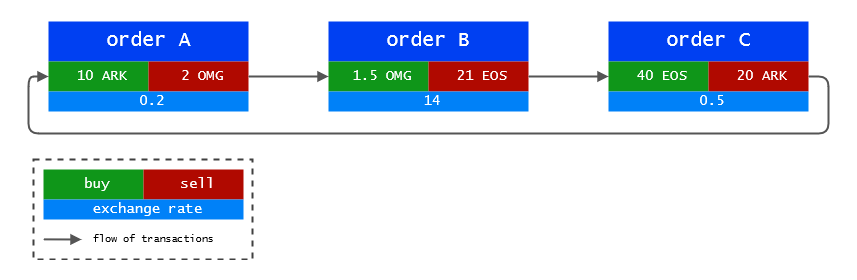
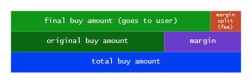

Loopring Smart
Contracts
The loopring smart contracts are a set of ethereum contracts that implement the loopring protocol. This document describes the functionalities they provide and is structured as follows:
The code is open source and available on Github.
The Loopring Smart Contracts will be referred to as LSC in this document. You can read more about the calculations and formulas used here in the whitepaperand supersymmetry {da447m@yahoo.com} Remarks on Loopring. Please note that in the current protocol implementation, the pricing model is the same as in our whitepaper and supersymmetry’s document, but the fee model is different.
Management of Orders
To understand what the LSC does, we must first take a look at the definition of an order, the available actions for the user, and how the current order state is tracked.
Anatomy of an Order
An order is a pack of data that describes the intent of the user on the market. To ensure the origin of the order, it is signed against the hash of its parameters with the user's private key. The signature is sent alongside the order on the network. This requires the order to stay immutable during its whole lifetime to verify the sender's address.
Signature = ECDSA(SHA3(order_params))
Even if the order never changes, the LSC has the possibility to compute its current state.
| Data | Comment |
|---|---|
| owner | The owner (signer) address |
| tokenS | Token to sell |
| tokenB | Token to buy |
| amountS | Amount of tokenS to sell |
| amountB | Amount of tokenB to buy |
| buyNoMoreThanAmountB | see below |
| ttl | (time to live) Seconds after wich the order will expire |
| lrcFee | Max amount of LRC to pay to the miner |
| marginSplitPercentage | The percentage of margin paid to the miner (when a better rate is found) |
We called the above model
The exchange rate r of the order is determined using the following formula r = amountS/amountB. When a miner does the ring-matching there is a possibility that he finds you a better rate that gets you more tokenB than the amountB you specified. But, if the buyNoMoreThanAmountB flag is set, the LSC will make sure that you still get exactly amountB of tokenB.
Example: with amountS = 10 and amountB = 2, r = 10/2 = 5. This means that you are willing to sell 5 tokenS for each tokenB. The miner does the ring-matching and finds you a rate of 4, topping the amount he could get you to 2.5 tokensB instead of 2. You only wanted 2 tokensB and set the buyNoMoreThanAmountB flag to true. The LSC takes that into consideration and still makes the transaction at a rate of 4 and you ended up selling 4 tokenS for each tokenB, effectively saving 2 tokenS. Keep in mind that this does not take into account the miner fees.
Full or Partial Cancellation
A user can partially or fully cancel an order by sending a special transaction to the LSC, containing the details about the order and the amounts to cancel. The LSC will take that into account, store the amounts to cancel and emit an OrderCancelled event to the network.
Fill and Cancellation Tracking
The LSC keeps track of fill and cancellation amounts by storing their values using the order's hash as an identifier. This data is publicly accessible and OrderCancelled / OrderFilledevents are emitted when it changes.
This tracking is useful for the LSC during the settlementring step.
Verification of Miner Supplied Data
This section will talk about what the LSC expect to receive from the miners and the steps taken to verify the data.
Order Ring
The LSC expect to receive order rings from the miners. An order ring is multiple orders linked together in a way that allows them to be all matched at their desired exchange rate or better. See the diagram below as an example.
Notice how each order's token to sell is the following order's token to buy. It creates a loop that allows each order to effectively sell and buy their desired tokens without having a matching order of the opposite pair.
A ring is said to be valid when all the transactions can be made at an exchange rate equal or better than the original one specified by the user. To verify the ring validity, the product of the original exchange rates of all orders should be equal to or greater than 1.
Example: Let's check if the above ring in the diagram is valid. 0.2 * 14 * 0.5 = 1.4 the result is greater than 1, thus the trade should be possible.
Order Ring Validation
The LSC does not perform the exchange rate or amount calculations but still has to verify what the miner supplied for these values. This is done by miners for two main reasons: solidity does not have support for floating point maths, especially pow(x, 1/n) and it is desired that the computation is made off-chain to save gas.
The following section discusses mathematical validation of the order rings. We recommend you to check supersymmetry’s complementary document listed at the beginning of this page.
Sub-Loop Checking
This step prevents covered interest arbitrage. Once a valid ring is found by a miner, he could be tempted to add other orders to it to achieve a zero-risk covered interest arbitrage. This is considered unfair conduct from the miner in Loopring.
The diagram below illustrates the previous valid ring where 2 orders were added.

To prevent this, Loopring requires that a valid loop cannot contain a sub-loop. There is a very simple way to check this: a token cannot be twice in a buy or sell position. In the above diagram we can see that ARK is twice as a token to sell and twice as a token to buy.
Fill Rate Checking
The rates calculation for the transactions in the ring are made by the miners for the reasons stated above in this page. Therefore the LSC have to verify that they are correct.
This first verifies that the sell rate the miner supplied for each order is at least equal or less than the original sell rate set by the user. Meaning that the user gets at least the exchange rate he asked for or better at the moment of the transaction.
Once the exchange rates are confirmed, we make sure that all the margins (discounts) are at the same percentage for every order, to ensure fairness.
Order Scaling
This is the part where the orders are scaled according to: - The history of filled and cancelled amounts - The current balance of the senders' accounts.
The process finds the order with the smallest amount to be filled according to the above characteristics and uses it as a reference for scaling all the transactions in the ring.
Example: If the smallest amount to be filled compared to the original order is 5%, all the transactions in the ring are scaled down to 5%. Once the transactions are completed, the order that was considered to have the smallest amount remaining to be filled should be completely filled.
Ring Settlement
If all the lights are green from the previous checks, the transactions can be made.
Transactions
To make the transactions, the LSC uses the TokenTransferDelegate smart contract. The introduction of such a delegate makes upgrading the protocol smart contract easier as all orders only need to authorize this delegate instead of different versions of the protocol.
For each order in the ring, a payment of tokenS is made to the following order. Then the miner's fee is paid depending on the fee model chosen by the miner. If the model was the LRC fee, the remaining amount after the fee is paid is returned to the order's owner. Finally, an OrderFilled event is fired.
Once all the transaction are made, a RingMined event is fired.
Fee Model
This section describes the current fee model of Loopring. As complementary material, we advise you to read Daniel's Medium article on the subject.
In the current fee model, the miner has two possible choices. When a user creates his order, he specifies a maximum of LRC to be paid to the miner as a fee, as well as a percentage of the margin made on his order that the miner can claim. This is called the margin split. The decision of which one to choose is left to the miner.
A representation of the margin split:
If the miner decides that the margin on the ring is too small, he will choose the LRC fee. On the contrary, if the margin is substantial enough for the resulting margin split to be worth more than the LRC fee, he will choose the margin split.
But here comes the twist. When the miner chooses the margin split, he has to pay the user a fee, which is equal to what the user would have paid as a fee to the miner for his transaction. This increases the threshold where the miner will choose the margin split to twice the LRC fee of the order, adding weight to the LRC fee choice.
From the miner's point of view, this allows him to get a constant income on low margin rings with the drawback of getting less income from the higher margin rings. As the market grows and becomes more mature, we expect to have less high margin rings and our fee model is based on that future.
We end up with the following graph:

- f is the LRC fee
- x is the margin split
- y is the miner's income
If f is the LRC fee and x the Margin Split, then the miner's income y is y = max(f, x-f) and we get the blue line.
If the specified LRC fee for the order is 0, the equation is y = max(0, x - 0) that simplifies to y = x and we get the orange line.
This has the following consequences: - If the margin split is 0, the miners will choose the flat LRC fee and are still incentivized. - If the LRC fee is 0, this is the orange line and the income is based on a general model. - When the margin split income get's bigger than twice the LRC fee, only then will the miner choose the margin split.
It should be noted that if the LRC fee is non-zero, no matter which option the miner chooses, there will always be a transfer of LRC between the miner and the order's sender. Either by sending back the surplus of LRC fee or by paying the LRC fee to the sender to take the margin split.
The current fee model is still open for discussion. Feel free to join our community on slack to talk about it. Suggestions are welcomed to the LIPs repository on github.
Emitted Events
In this page you should have come by a set of events that are emitted by the LSC. These events exist to allow the relays/order browsers and other elements that need an update of their orderbooks to get the information as quickly as possible.
A list of the emitted events: * OrderCancelled * OrderFilled * RingMined
Fraud and Attack Protections
Ring Filch
An attacker could monitor all unconfirmed Rings and broadcast the same rings with their own digital signature. We call this Ring Filch. In order to prevent Ring Filch, Loopring allows miners to use two steps in order to submit their Rings:
- Submit the hash of the Ring and wait for confirmation
- Submit the Ring itself
This protection is valid for a blocksToLive time specified in the LSC. After that duration, if the ring has not been submitted, an other miner can claim it.
Denial of Service
We allow nodes to selectively handle orders by setting their own criteria and they may choose to hide or reveal them. Therefore we do not see denial of service as a form of unethical behaviour.
Massive Tiny Order Attack
A user could send a large amount of tiny orders to attack the Loopring nodes. However, since we allow nodes to reject orders based on their own criteria, most of these orders will be rejected because they do not yield satisfying profit when matched. Thus, a massive tiny order attack is not feasible.
Insufficient Balance
Malicious users may sign and spread out orders whose value inside the order is not zero but whose address actually has zero balance. Nodes could monitor and notice that some orders actual balance is zero, update these orders states accordingly and then discard them. Nodes do have to spend time to update the status of an order, but can also choose to minimize the effort by, for example, blacklisting addresses and drop related orders.